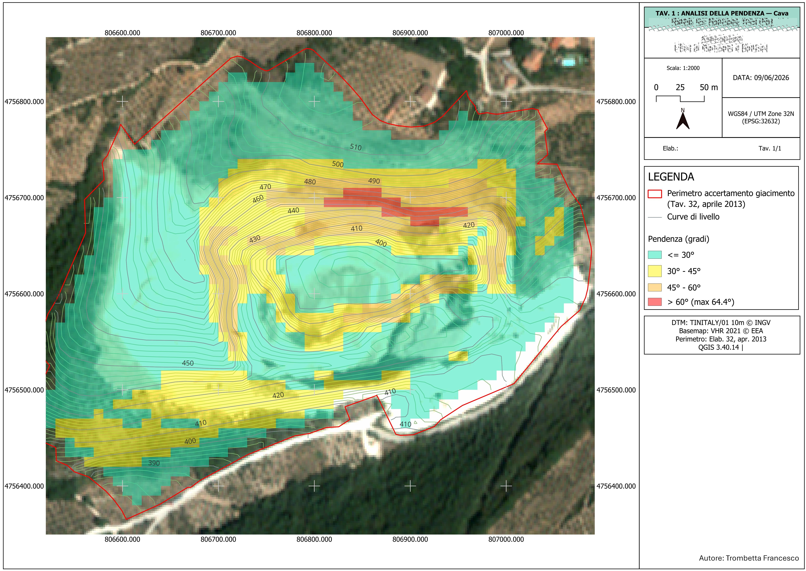

GIS applicato al controllo tecnico-documentale — Trevi (PG), 2026
Analisi GIS prodotta per un'associazione civica locale a supporto di un'istanza formale alla Regione Umbria. A partire dalla georeferenziazione di una tavola progettuale cartacea (Elab. 32, apr. 2013) e dalla digitalizzazione del perimetro autorizzato, è stata condotta un'analisi raster della pendenza su DTM TINITALY 10m, classificata in quattro fasce (≤30°, 30–45°, 45–60°, >60°).
La pendenza massima rilevata nell'area è risultata pari a 64.4°. Il risultato è stato restituito in un layout di stampa professionale a scala 1:2000, con basemap Pan-European VHR Image Mosaic 2021 (Copernicus/EEA, licenza aperta). Sistema di riferimento: EPSG:32632 (WGS84 UTM 32N).
Il flusso di lavoro ha compreso: georeferenziazione della tavola cartacea tramite punti di controllo su cartografia di riferimento; digitalizzazione manuale del perimetro dell'area estrattiva; calcolo della pendenza dal DTM TINITALY/01 10m (INGV); riclassificazione raster in quattro classi; produzione del layout di stampa con legenda, scala grafica, freccia nord e fonti dati.
